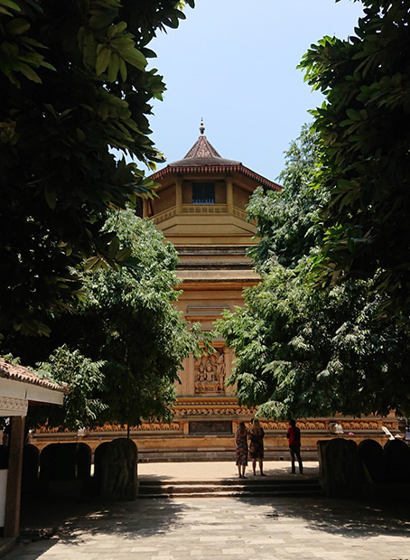
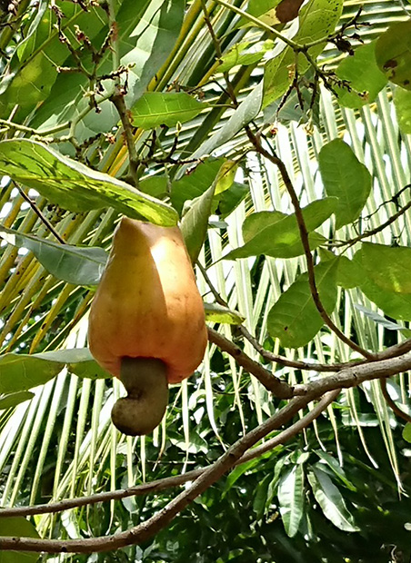

「参加を決めた理由は、ホームステイということで、国の状況や人々の暮らしを知ることができ、安全面でも良いと思ったからです。
出発前は、スリランカの状況が全くわからないため、Visaの更新、ステイ中の旅行などで多少不安がありましたが、マーネルさんが教えて下さったり、援助して下さり、滞在中に自爆テロがあったものの、いろいろな体験ができました。

また、英語のレッスンは、ニュースや日記(宿題)、興味のあることを題材に会話中心のレッスンだったので、楽しんで苦手な会話に取り組めました。
宿題も、無理せずに毎日英文を書くことができました。
ホームステイは本当に素晴らしい体験ができたと思います。
ホストファミリーには家族のように接していただき、マーネルさんのスリランカ料理が私の体に合うのか、とっても元気に過ごせました♪
ちょうどお正月にステイできたこと、お坊様に食事のお布施をしたこと、スリーパーダに登ったこと、地域のお祭りを見に行ったことなど、日常的に一緒に行動することで、観光旅行では体験できないスリランカ体験ができたと思います。

日本にいると製品や商品になってしまい、どのように自分の手元に来るのか想像できませんが、特に食べ物について考えさせられました。
東京で流行っているタピオカジュースのタピオカのお芋。
カシューナッツの普段見るカシューナッツの状態にするまでの手間。
ガーデンから日常的な食事にハーブやフ ルーツ、ココナッツを料理することなど、勉強になりました。
それに、今回のテロのこともありますが、スリランカの歴史的なことも含めて、多民族多言語、多文化多宗教であることを実感しました。
自分を含め、日本は、多様性社会についての意識レベルがまだ低いように思います。

日本に戻りましたが、自分自身の体験や考えの変化など、今まで以上に思うことがあったので、それを今後の生活に生かしていきたいです。
課題も見つかり、次回のスリランカ行きまでに、すこし頑張ろうという気持ちがあります。
次回行くときには、もっとスリランカについて知りたいですし、テロのため行けなかった世界遺産になっている仏教遺跡に行きたいとおもいます。
もちろんその時に、またBeインターナショナルのホームステイプログラムでマーネルさん宅にステイしたいです。
今後ともどうぞよろしくお願致します。」